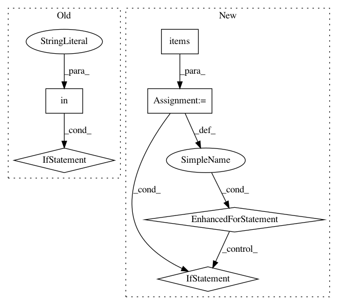

360f6e8aee7989b7e649c21883026612964b9cf7,ludwig/models/model.py,Model,batch_evaluation,#Model#Any#Any#Any#Any#Any#Any#Any#Any#Any#,983
Before Change
only_predictions
)
if "combined" in output_stats and LOSS in output_stats["combined"]:
regularization = session.run(
[self.regularization_loss],
feed_dict={self.regularization_lambda: regularization_lambda}
)[0]
output_stats["combined"][LOSS] += regularization
// todo: tf2 debugging
fake_stats = OrderedDict(
[("y", OrderedDict([("loss", [9489.847173455057]),
("mean_squared_error", [9489.847173455057]),
("mean_absolute_error", [76.44962405086903]),
After Change
// todo: tf2 debugging
template = f"Dataset {name}:"
for measure, measure_fn in output_feature.measure_functions.items():
if measure_fn is not None: // todo tf2 test is needed only during development
template += f" {measure}: {measure_fn.result()}"
print(template)
fake_stats = OrderedDict(
[("y", OrderedDict([("loss", [9489.847173455057]),
In pattern: SUPERPATTERN
Frequency: 3
Non-data size: 6
Instances
Project Name: uber/ludwig
Commit Name: 360f6e8aee7989b7e649c21883026612964b9cf7
Time: 2020-03-06
Author: jimthompson5802@aol.com
File Name: ludwig/models/model.py
Class Name: Model
Method Name: batch_evaluation
Project Name: uber/ludwig
Commit Name: 690e6c8f9a42cf5b42dc010dfb073e54175da221
Time: 2020-05-07
Author: jimthompson5802@gmail.com
File Name: ludwig/models/modules/combiners.py
Class Name: ConcatCombiner
Method Name: call
Project Name: OpenMined/PySyft
Commit Name: 817e9d7ef755acfb40a73027f02f62a872425016
Time: 2020-05-13
Author: murarugeorgec@gmail.com
File Name: syft/execution/plan.py
Class Name: Plan
Method Name: build